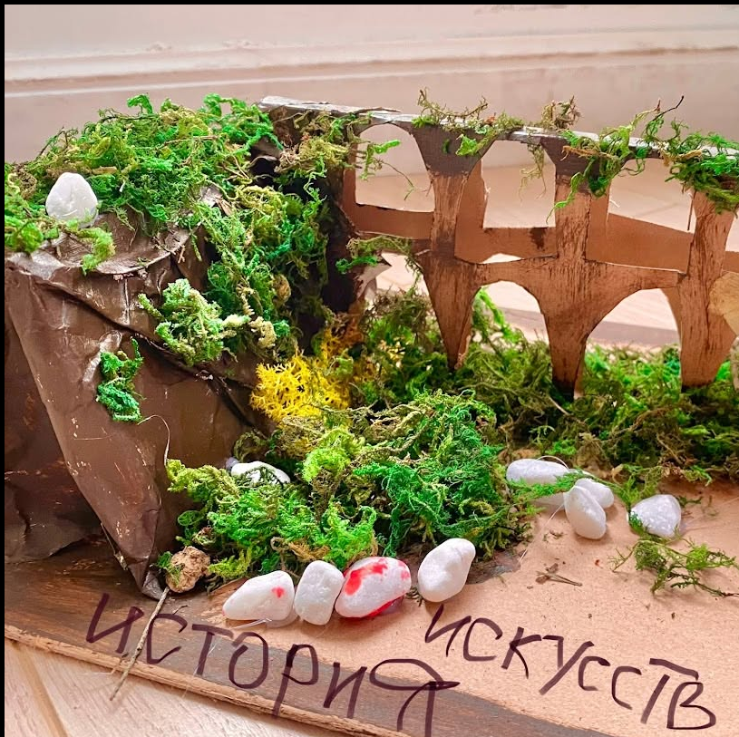

Городской творческий лагерь · Варна
Лето по уши
в краске
Бумага. Кисти. Картонные дома.
И целое лето для новых идей.
Программа лета 2027 готовится.
Хочу узнать о старте записисами!
01 / как проходит лето
Мастерская постепенно
становится целым миром
Вокруг — краски, карандаши и ножницы. Появляются домики и палатки, которые дети строят сами. За пределами мастерской — прогулки, настольные игры и походы в музеи.
02 / наполнение
В течение недели

Бумага становится
мостом. Коробка — городом.
Пример пространственной работы из мастерской Tiny Art Club.
03 / 12 недель
Тематическое лето
Темы на 2027 год ещё готовятся. Здесь появится программа каждой недели.
- 01Тема скоро появится
- 02Тема скоро появится
- 03Тема скоро появится
- 04Тема скоро появится
- 05Тема скоро появится
- 06Тема скоро появится
- 07Тема скоро появится
- 08Тема скоро появится
- 09Тема скоро появится
- 10Тема скоро появится
- 11Тема скоро появится
- 12Тема скоро появится
04 / условия
Что уже известно
Участие в лагере
Группа — до 12 детей. Для второго ребёнка предусмотрена дополнительная скидка; размер уточняйте при обращении.
Питание оплачивается отдельно, либо ребёнок может принести еду с собой.
Даты и темы лета 2027 ещё не опубликованы.
05 / остаёмся на связи
Расскажем, когда
откроется запись
Напишите нам в мессенджер или позвоните. Программа лета 2027 пока готовится.